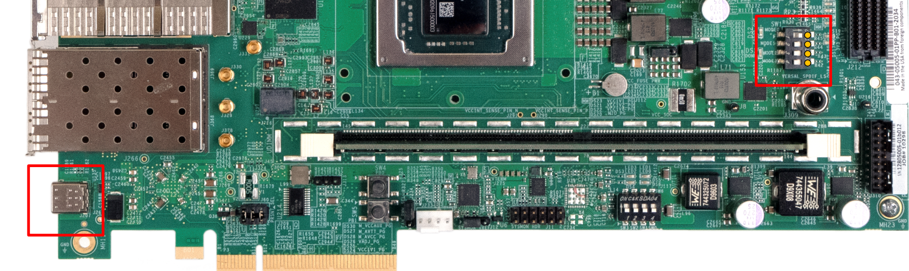
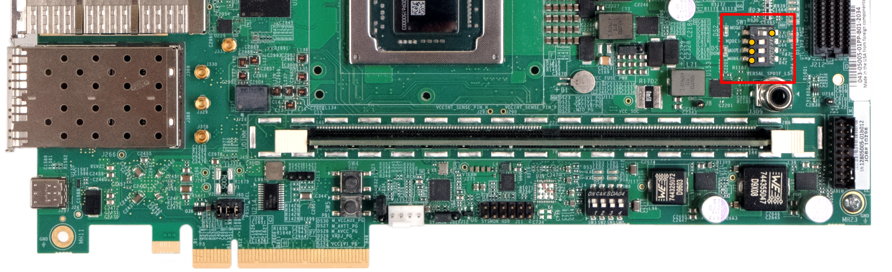

AMD-Xilinx Versal ACAP VCK190
Instructions below show how to run OP-TEE on the VCK190 development board. Details of the Versal ACAP can be found in the Versal Technical Reference Manual (Versal_TRM).
Supported boards
This makefile supports the VCK190 but also supports the VMK180 development board as well.
Setting up the toolchain
This build chain relies on Petalinux 2022.1, therefore the first step will be to download and install it from the AMD-Xilinx website (Downloads).
Then, you will also need to download the board support package (BSP) from the AMD-Xilinx website (Downloads). It contains prebuilt firmwares and hardware definition files required to assemble a bootable image.
Note
You will need a free AMD-Xilinx account to proceed with the two previous steps.
Configuring and building for VCK190
Lets summarize the steps taken so far; these are common to all boards.
$ mkdir ~/optee-project
$ cd ~/optee-project
$ repo init -u https://github.com/OP-TEE/manifest.git -m versal.xml
$ repo sync -j4 --no-clone-bundle
$ cd build
$ make -j8 toolchains
$ make -j8
At this point we have a working directory ~/optee-project with all the
repositories required with the exception of the Versal ACAP board support
package. A pre-requisite to unpacking the BSP file is installing Petalinux
(install) as previously mentioned.
Having done that, now is the time to unpack the BSP:
$ cd ~/optee-project
$ cp ~/Downloads/xilinx-vck190-v2022.1-04191534.bsp .
$ source /path/to/petalinux.2022.1/settings.sh
$ petalinux-create --type project -s xilinx-vck190-v2022.1-04191534.bsp
$ ls
xilinx-vck190-2022.1
In order for the Versal OP-TEE port to work correctly, the PLM needs to be updated to add the XilNvm and XilPuf libraries. This can be accomplished by the following steps within the PetaLinux workspace created above:
$ mkdir project-spec/meta-user/recipes-bsp/embeddedsw
$ cp ~/optee-project/build/versal/plm-firmware_%.bbappend project-spec/meta-user/recipes-bsp/embeddedsw
$ petalinux-build -c plm
The newly created PLM will be located in the folder images/linux/plm.elf.
Note
Replace the VCK190 BSP with the VMK180 BSP if you want to build this project for the VMK180 development board.
Before building the release, you will need to edit the Boot Image File (BIF)
build/versal/bootImage-versal-vck190.bif to point to the required BSP files.
The paths for the following files in the BIF will need to be updated before
proceeding:
vpl_gen_fixed.pdi
plm.elf
psmfw.elf
Note
The default PLM only contains the xilsecure library. If you would like to take advantage of all of hardware cryptographic features implemented for Versal, you must enable the xilpuf and xilnvm libraries by following the steps above for customizing the PLM (PLM_Customization).
The xilpuf library enables support of the physically unclonable function (PUF) and the xilnvm library enables support of reading and writing to eFUSEs. Once these libraries are enabled, be sure to point to the updated PLM firmware in the previously mentioned BIF file.
After you have done that you can build the images as follows:
$ cd ~/optee-project
$ cd build
$ make -f versal.mk image
$ ls versal | grep -E 'BIN|ub'
BOOT.BIN
versal-vck190.ub
JTAG boot to U-Boot shell
To run the bootable image BOOT.BIN via JTAG, configure the boot switches as
seen below and then power up the board.
{kind=link}

Then run the boot_jtag.sh script.
This script will first ask for the path of the Petalinux installation; once entered, it will download and execute the image on the Versal ACAP platform.
$ cd ~/optee-project/build/versal/
$ ./boot_jtag.sh
SD card creation and boot
Prepare a SD card with a single bootable partition large enough to hold both of the built files.
Using gparted or any other partition manager tool create a single partition
on the card (remember to flag it as bootable)
1GB FAT32 bootable partition (i.e:
/dev/sdc1).
Once SD card is partitioned, mount it on your file system and copy the images:
$ cp ~/optee-project/build/versal/BOOT.BIN <mount_point>/
$ cp ~/optee-project/build/versal/versal-vck190.ub <mount_point>/
$ sync
$ umount <mount_point>
Now you can use the newly created SD card to boot your board. Make sure the boot switches are configured for SD boot.
{kind=link}

Unless you have modified the default U-boot boot command, you will need to stop the sequence at the U-boot shell and issue these three additional commands to boot to Linux:
uboot shell$ mmc dev 0
uboot shell$ fatload mmc 0:1 0x20000000 versal-vck190.ub
uboot shell$ bootm 0x20000000